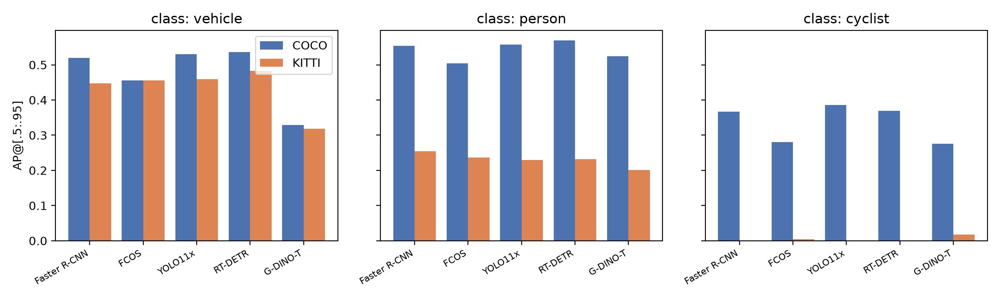
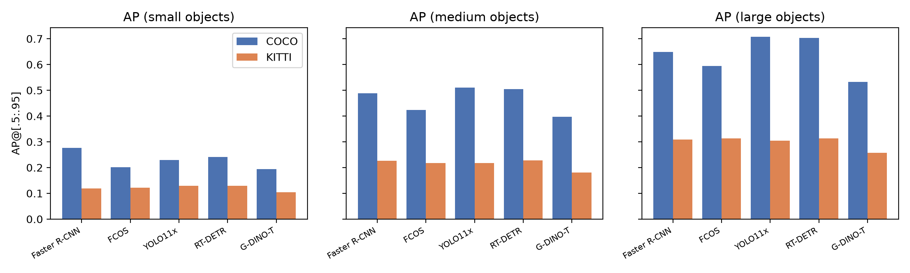
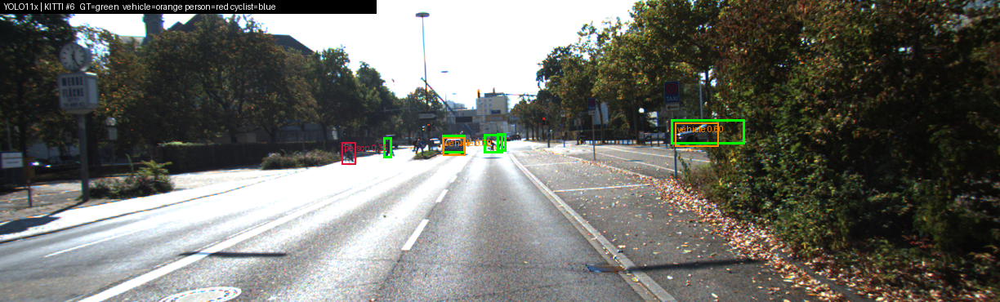
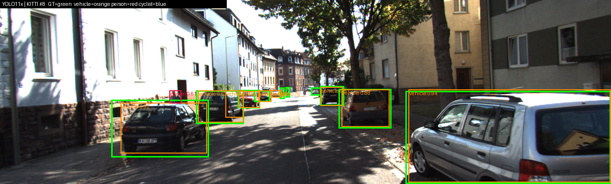
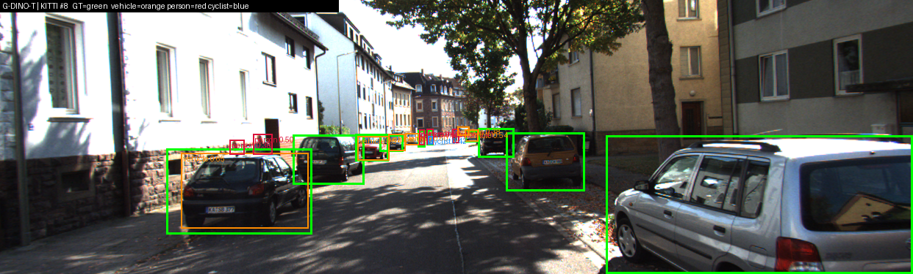
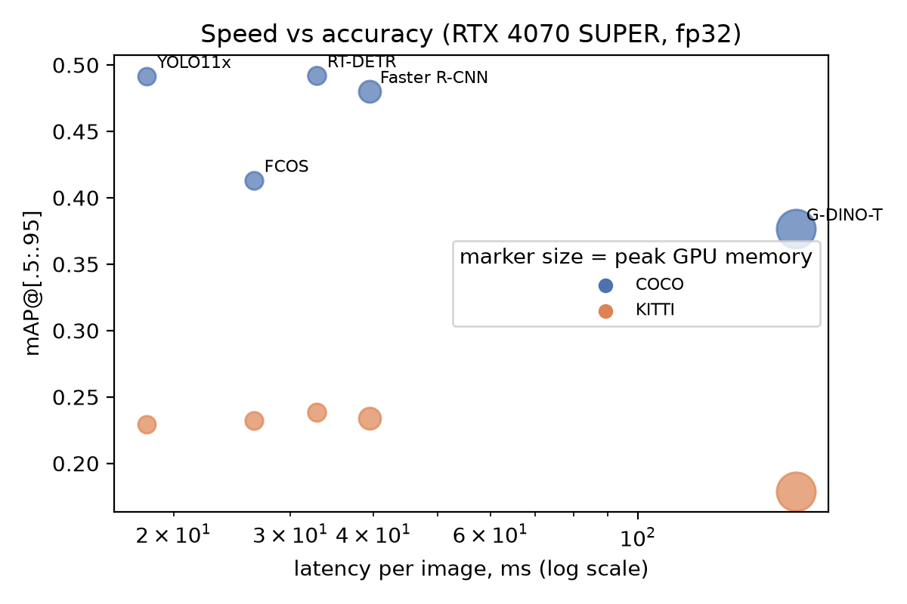

experiments/ folder.Object detectors are almost always benchmarked on the same distribution they were trained on (COCO). Deployed systems such as autonomous vehicles, however, see a different camera, image aspect ratio, object scale distribution and label definition. This report asks: (1) how much accuracy do COCO-trained detectors lose on a driving dataset without retraining, and which classes and object scales degrade most; (2) does the detector architecture (anchor-based vs. anchor-free, NMS-based vs. query-based, closed-set vs. open-vocabulary) change the answer; and (3) what accuracy do we buy per millisecond and per megabyte of GPU memory? We use the ngdet evaluation framework from the course repository [13], which wraps each model behind a common predict() API and scores every run with pycocotools.
We evaluate five configurations from four detector families (Table 1). Faster R-CNN and FCOS share the same ResNet-50+FPN backbone family and the same torchvision implementation, so their comparison isolates the effect of the head and target assignment. YOLO11x and RT-DETR are the two dominant real-time paradigms (dense prediction + NMS vs. set prediction with object queries). Grounding DINO represents open-vocabulary detection: its classifier is replaced by text-conditioned similarity to a prompt. Unlike the other four, it was not trained on COCO [7]. Its training data (Objects365, the GoldG grounding set and Cap4M image–caption pairs) include some images that also appear in COCO (through GQA), but never COCO's box labels. For Grounding DINO, therefore, COCO val2017 is itself a zero-shot test, and COCO→KITTI is a shift between two unseen datasets.
| Model | Family / paradigm | Checkpoint (source) | Training data | Input resolution | Duplicate removal |
|---|---|---|---|---|---|
| Faster R-CNN v2 [1] | Two-stage, anchor-based (RPN + RoI head), FPN [2] | fasterrcnn_resnet50_fpn_v2 (torchvision) | COCO train2017 | short side 800, long ≤1333 | per-class NMS, IoU 0.5 |
| FCOS [3] | One-stage, anchor-free, per-pixel + centerness, focal loss [4] | fcos_resnet50_fpn (torchvision) | COCO train2017 | short side 800, long ≤1333 | NMS, IoU 0.6 |
| YOLO11x [8] | One-stage, anchor-free, decoupled head, DFL, task-aligned assignment | yolo11x.pt (Ultralytics 8.4.193) | COCO train2017 | letterbox, long side 640 | NMS, IoU 0.7 (Ultralytics default) |
| RT-DETR-R50 [6] | Query-based transformer, Hungarian matching [5] | PekingU/rtdetr_r50vd (HF Transformers) | COCO train2017 | resized to 640×640 | none (one-to-one set prediction) |
| Grounding DINO-T [7] | Open-vocabulary, text-prompted DETR-style | IDEA-Research/grounding-dino-tiny (HF) | Objects365 + GoldG + Cap4M (no COCO labels) | short side 800, long ≤1333 | none; text threshold 0.25 |
model.transform, roi_heads.nms_thresh; HF AutoImageProcessor.size), not copied from documentation.COCO val2017 [9]: 5,000 images, 80 classes; the in-domain reference for the four COCO-trained models (already zero-shot for Grounding DINO). KITTI 2D object [10]: 1242×375 front-camera driving images from Karlsruhe. We use the framework's deterministic 80% "train" split of the 7,481 labeled training images (5,984 images). None of the five models were trained on KITTI, so this is a pure zero-shot evaluation. Because the label sets differ, both predictions and ground truth are projected into one 3-class taxonomy (driving3 in ngdet/taxonomy.py):
| Unified class | COCO model outputs / COCO GT | KITTI GT | Open-vocab prompt (G-DINO) |
|---|---|---|---|
| vehicle | car, truck, bus, train, motorcycle | Car, Van, Truck, Tram | "car . truck . bus . van" |
| person | person | Pedestrian, Person_sitting | "person . pedestrian" |
| cyclist | bicycle | Cyclist | "bicycle . cyclist" |
| dropped | all other 72 classes | Misc, DontCare | – |
| Item | Value |
|---|---|
| Hardware | NVIDIA GeForce RTX 4070 SUPER (12 GB), Windows 11; batch size 1 |
| Software | Python 3.11.4, PyTorch 2.14.1+cu126, torchvision 0.29.1, Ultralytics 8.4.193, Transformers 5.22.0, pycocotools (full list: experiments/env.txt) |
| Confidence threshold | 0.3, applied identically to every model after the model's own post-processing (adapters call the backend with threshold 0) |
| Metric | COCO-style AP@[.5:.95], AP50, AP75, APS/M/L, AR@100, per-class AP (pycocotools), over the 3 unified classes |
| Latency | end-to-end predict() incl. pre/post-processing, KITTI image 000010, 10 warm-up + 100 timed iterations, fp32 and fp16 |
| GPU memory | torch.cuda.max_memory_allocated() over 5 inferences (scripts/gpu_memory.py) |
Exact commands (also stored as experiments/*/command.txt, run from the repository root):
python -m DeepDataMiningLearning.ngdet.run_eval --models torchvision:fasterrcnn_resnet50_fpn_v2 torchvision:fcos_resnet50_fpn yolo:yolo11x.pt hf_detr:PekingU/rtdetr_r50vd gdino:IDEA-Research/grounding-dino-tiny --datasets coco --max-images 0 --score-thr 0.3 --device cuda --roots coco=../data/coco/val2017 --coco-ann ../data/coco/annotations/instances_val2017.json --out-dir ../experiments/coco_full python -m DeepDataMiningLearning.ngdet.run_eval --models <same 5 models> --datasets kitti --max-images 0 --score-thr 0.3 --device cuda --roots kitti=../data/kitti --out-dir ../experiments/kitti_full python -m DeepDataMiningLearning.ngdet.latency --models <same 5 models> --accel fp32 fp16 --image ../data/kitti/training/image_2/000010.png --warmup 10 --iters 100 --device cuda --out-dir ../experiments/latency
Issue encountered. In the first KITTI run, Faster R-CNN and FCOS crashed with UnicodeEncodeError: the KITTI loader prints an emoji, which Windows' default cp1252 console encoding cannot write to a redirected log. They were rerun with PYTHONIOENCODING=utf-8 (experiments/kitti_cnn/), with no code changes and identical settings.
| Model | mAP | AP50 | AP75 | APS | APM | APL | AR@100 | vehicle | person | cyclist | run (s) |
|---|---|---|---|---|---|---|---|---|---|---|---|
| Faster R-CNN | 0.480 | 0.730 | 0.511 | 0.276 | 0.489 | 0.648 | 0.570 | 0.519 | 0.554 | 0.367 | 282 |
| FCOS | 0.413 | 0.653 | 0.428 | 0.201 | 0.424 | 0.594 | 0.542 | 0.456 | 0.504 | 0.280 | 239 |
| YOLO11x | 0.491 | 0.659 | 0.538 | 0.230 | 0.511 | 0.708 | 0.539 | 0.531 | 0.558 | 0.386 | 162 |
| RT-DETR | 0.492 | 0.709 | 0.518 | 0.241 | 0.504 | 0.704 | 0.567 | 0.537 | 0.570 | 0.370 | 287 |
| G-DINO-T | 0.377 | 0.522 | 0.417 | 0.194 | 0.397 | 0.533 | 0.499 | 0.329 | 0.525 | 0.275 | 1279 |
| Model | mAP | AP50 | AP75 | APS | APM | APL | AR@100 | vehicle | person | cyclist | run (s) |
|---|---|---|---|---|---|---|---|---|---|---|---|
| Faster R-CNN | 0.234 | 0.432 | 0.233 | 0.119 | 0.227 | 0.308 | 0.328 | 0.447 | 0.254 | 0.001 | 330 |
| FCOS | 0.232 | 0.433 | 0.227 | 0.121 | 0.218 | 0.312 | 0.342 | 0.455 | 0.237 | 0.004 | 248 |
| YOLO11x | 0.229 | 0.418 | 0.230 | 0.129 | 0.217 | 0.304 | 0.299 | 0.459 | 0.229 | 0.001 | 218 |
| RT-DETR | 0.239 | 0.437 | 0.234 | 0.129 | 0.227 | 0.314 | 0.309 | 0.482 | 0.232 | 0.002 | 291 |
| G-DINO-T | 0.179 | 0.343 | 0.172 | 0.104 | 0.180 | 0.257 | 0.350 | 0.319 | 0.201 | 0.018 | 1352 |
| Model | mAP | APS | APM | APL | vehicle | person | cyclist |
|---|---|---|---|---|---|---|---|
| Faster R-CNN | −51% | −57% | −54% | −52% | −14% | −54% | −100% |
| FCOS | −44% | −39% | −49% | −47% | −0% | −53% | −99% |
| YOLO11x | −53% | −44% | −57% | −57% | −14% | −59% | −100% |
| RT-DETR | −51% | −46% | −55% | −55% | −10% | −59% | −100% |
| G-DINO-T | −52% | −46% | −55% | −52% | −3% | −62% | −94% |
scripts/analyze.py).
Domain shift compresses the field. On COCO the closed-set models span 0.413–0.492 mAP (0.079 range); on KITTI they span 0.229–0.239 (0.010 range). A 2015-design two-stage detector (Faster R-CNN) and a 2024 real-time model (YOLO11x) become practically indistinguishable. The best in-domain model is not what determines zero-shot performance. FCOS, the weakest closed-set model on COCO, has the smallest relative drop (−44%), largely because it loses nothing on vehicles.
The drop is driven by classes, not uniformly. Vehicle AP is nearly preserved (−0 to −14%); cars are the most common COCO vehicle and look similar in Germany and in COCO's Flickr photos. Person AP falls by 53–62% for every model. We attribute this to (i) scale: KITTI pedestrians are often distant and only 25–60 px tall; (ii) KITTI annotation policy, where many people near the image edge or in the background are not labeled or are DontCare. The framework drops DontCare rather than treating it as an ignore region, so correct detections there count as false positives (Fig. 4a). Cyclist AP drops to essentially zero (§8.1).

Scale. Contrary to the intuition that "small objects suffer most", relative drops are similar across scales (39–57%), and for most models large objects drop slightly more than small ones. In KITTI, large objects are mostly near, truncated cars at the image border and heavily occluded parked cars. KITTI's ground truth covers the full extent of such cars, while COCO-trained models tend to box only the visible part, which produces IoU < 0.75 even when the object is found. Small objects were already weak on COCO (APS ≤ 0.28), so they have less to lose in absolute terms.
Both use a ResNet-50 + FPN backbone from torchvision, so differences come from the head. Faster R-CNN's RPN places 3 anchors per location and assigns positives by IoU ≥ 0.7 with ground truth; a second stage then refines RoI-pooled proposals. FCOS removes anchors: every feature-map location inside a GT box (restricted to a center region and a size range per FPN level) regresses its distances to the four box sides, and a centerness branch down-weights off-center predictions. On COCO the two-stage model leads by 0.067 mAP and especially on small objects (0.276 vs 0.201): the second-stage RoI refinement helps localization of small boxes. Part of the gap is also checkpoint vintage: the "v2" Faster R-CNN weights come from an improved training recipe, while torchvision's FCOS weights use the original 1× recipe. On KITTI the gap disappears (0.234 vs 0.232), and FCOS has the highest AR@100 among the closed-set models (0.342). Without anchor shapes tuned to COCO statistics, the anchor-free head appears slightly less biased towards COCO box shapes, which plausibly matters for KITTI's wide, short car boxes.
YOLO11 predicts a box at every location of three feature maps and relies on NMS (IoU 0.7) to remove duplicates. Its training uses task-aligned assignment (TAL), which picks positives by a joint score of classification confidence and IoU, plus CIoU + Distribution Focal Loss for boxes. RT-DETR instead decodes a fixed set of 300 object queries and is trained with Hungarian one-to-one matching [5], so each object is supervised by exactly one query. This makes NMS unnecessary: duplicates are penalized during training instead of removed afterwards. Their COCO mAP is identical (0.491 vs 0.492), but the error profiles differ. YOLO11x has the best AP75 (0.538) but the lowest AP50 among the top three (0.659): its boxes are tight, but it misses more objects at the loose threshold. RT-DETR and Faster R-CNN have higher AP50 (0.709/0.730) and higher AR@100. On KITTI, RT-DETR is the best closed-set model overall (0.239) and on vehicles (0.482), suggesting that its global attention context helps with partially occluded cars.
KITTI's Cyclist box encloses the rider and the bicycle. COCO has no cyclist class: COCO models emit a bicycle box (the frame only) and a separate person box (the rider). The mapping in Table 2 sends bicycle → cyclist, so the predicted cyclist box is systematically too small, and the rider produces a person box with no matching person GT. We verified this with scripts/failure_cases.py: for every KITTI cyclist in the first 600 images (133 boxes), we measured the best IoU between the GT box and (a) any predicted cyclist box, and (b) the union of the best-matching bicycle and person boxes.
| Model | mean best IoU, cyclist pred | cyclist pred IoU ≥ 0.5 | no overlapping cyclist pred | mean IoU, bike ∪ person | bike ∪ person IoU ≥ 0.5 |
|---|---|---|---|---|---|
| YOLO11x | 0.118 | 1.5% | 63% | 0.444 | 57% (of 72) |
| G-DINO-T | 0.434 | 37.6% | 17% | 0.597 | 76% (of 124) |
experiments/failures/cyclist_iou_stats.json.For YOLO11x, only 1.5% of cyclists are matched at IoU 0.5 by its bicycle box, but merging the bicycle and rider boxes would match 57% of them. The detector sees cyclists; the evaluation definition simply does not agree with COCO's. Grounding DINO, which is literally prompted with the word "cyclist", produces rider+bike boxes 38% of the time. This is the clearest benefit of open-vocabulary detection in our study. Its cyclist AP is still low (0.018), which we attribute to ranking: the same prompt also fires on parked bicycles and pedestrians, so false positives with high scores dominate the precision–recall curve.



DontCare objects become false positives because the framework drops DontCare instead of ignoring it (Fig. 4a). This inflates the person drop in particular.| Model | fp32 mean (ms) | fp32 p90 (ms) | fp32 FPS | fp16 mean (ms) | Peak GPU mem (MB) | COCO mAP | KITTI mAP |
|---|---|---|---|---|---|---|---|
| Faster R-CNN | 39.4 | 43.1 | 25.4 | 25.8 | 439 | 0.480 | 0.234 |
| FCOS | 26.4 | 29.9 | 37.9 | 25.6 | 289 | 0.413 | 0.232 |
| YOLO11x | 18.2 | 22.0 | 54.9 | 20.7 | 280 | 0.491 | 0.229 |
| RT-DETR | 32.8 | 35.7 | 30.4 | 35.2 | 298 | 0.492 | 0.239 |
| G-DINO-T | 172.9 | 184.7 | 5.8 | 171.5 | 1371 | 0.377 | 0.179 |
experiments/latency/.
YOLO11x is Pareto-optimal: it is the fastest model (18 ms, 55 FPS) and uses the least memory, at essentially the best COCO accuracy. RT-DETR matches its accuracy at 1.8× the latency in this implementation (HF Transformers, not the authors' TensorRT-optimized code). Grounding DINO costs 9.5× YOLO's latency and 4.9× its memory, because every image passes through a BERT text encoder and several layers of image–text cross-attention. fp16 only helps Faster R-CNN (−35%). For YOLO and RT-DETR at batch 1, latency is dominated by pre/post-processing and kernel-launch overhead rather than arithmetic, and the dtype casts add overhead, so fp16 is slightly slower. This is a reminder that speed-ups reported for large batches or TensorRT do not automatically transfer to a simple single-image pipeline.
Grounding DINO has the lowest mAP on both datasets (0.377 / 0.179), but this should not be read as "open-vocabulary is worse". First, and most important, COCO is not its training distribution: the other four models are scored on their own label space and box conventions, while Grounding DINO detects COCO classes zero-shot from a text prompt. Its 0.377 is therefore a zero-shot number competing against in-domain numbers. Second, it is the Tiny model with a Swin-T backbone, compared against x-large/R50 closed-set models. Third, its errors are concentrated on vehicle (COCO 0.329 vs ≥0.456 for the others) while its person AP (0.525) is competitive. The prompt "car . truck . bus . van" must be matched at the phrase level, and motorcycles and trains, which COCO GT maps to vehicle, are never prompted. That is a prompt/taxonomy mismatch, not a recognition failure. Fourth, it has the highest KITTI AR@100 (0.350) and the best cyclist geometry (Table 6). It finds objects but ranks them poorly, which is consistent with its text-similarity scores being less calibrated than a trained softmax/sigmoid classifier. Its relative drop (−52%) matches the closed-set models', even though for Grounding DINO neither dataset is in-domain. The drop therefore cannot be explained as "leaving the training distribution". It reflects what all five models share on KITTI: smaller objects, truncated and occluded cars, unlabeled people, and the cyclist definition. Large-scale grounding pre-training did not make the model immune to these dataset-specific factors. Its one real advantage is that a class definition can be changed without retraining, as the cyclist experiment shows.
(1) Domain shift dominates architecture. Five detectors spanning 2015–2024 designs all lose about half their mAP on KITTI and converge to within 0.010 mAP of each other. (2) The loss is class-specific: vehicles transfer, persons halve, cyclists vanish. Most of the cyclist collapse is caused by dataset label definitions, not detector weakness. We show that merging the bicycle and rider boxes would raise the IoU≥0.5 match rate from 1.5% to 57%. For any cross-dataset study, auditing the taxonomy mapping is as important as choosing the model. (3) Anchor-free FCOS transfers best relative to its in-domain score, and NMS-free RT-DETR is the best KITTI model overall. (4) YOLO11x is Pareto-optimal for speed and memory. Open-vocabulary Grounding DINO is 9.5× slower and not more robust, but its text interface fixes definition mismatches without retraining.
ngdet detection evaluation framework and tutorial, https://github.com/lkk688/DeepDataMiningLearning.| Path | Contents |
|---|---|
experiments/env.txt | nvidia-smi output, library versions, full pip freeze |
experiments/coco_full/ | command, full log with every pycocotools table, metrics.json, per-image prediction counts, report.md |
experiments/kitti_full/, kitti_cnn/ | same, for KITTI (YOLO/RT-DETR/G-DINO, and the Faster R-CNN/FCOS rerun) |
experiments/latency/ | latency command, log, latency.json, GPU memory JSON |
experiments/failures/ | overlay images and cyclist IoU statistics |
scripts/ | analyze.py (tables and figures), gpu_memory.py, failure_cases.py |